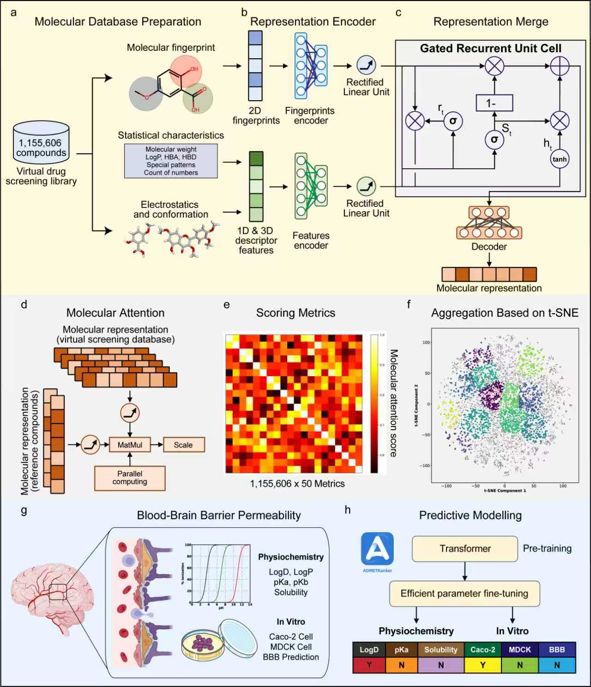
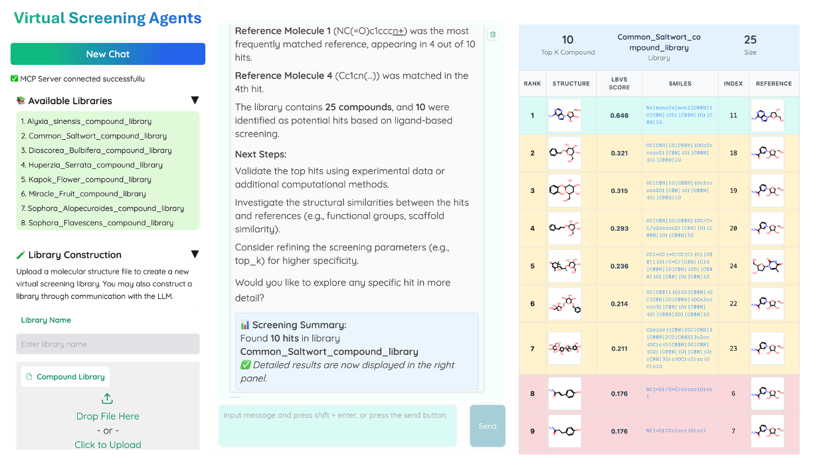
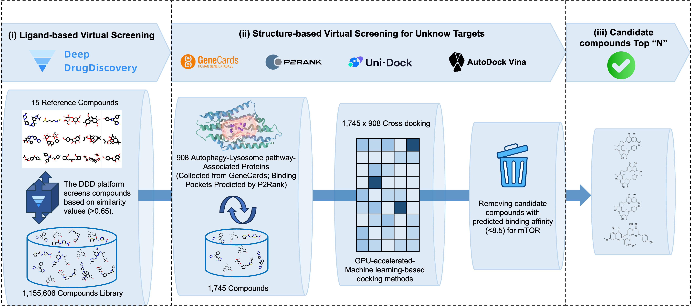

DeepDrugDiscovery
A mechanism-aware platform that screened over 1.16 million compounds and identified blood–brain-barrier-permeable, mTOR-independent autophagy enhancers for Alzheimer’s disease.
Imperial College London · Bioengineering
I am an AI researcher and PhD candidate developing multi-agent systems that connect predictive models, experimental evidence and domain knowledge — turning complex drug discovery workflows into research tools scientists can use.
Scholar metrics snapshot · September 2026
Core research systems
The portfolio follows a connected research cycle — identify the right target, design the right molecule, resolve the right structure and test the right biological system.

A mechanism-aware platform that screened over 1.16 million compounds and identified blood–brain-barrier-permeable, mTOR-independent autophagy enhancers for Alzheimer’s disease.
Target intelligence
An evolving multi-agent system for target deconvolution and prioritisation, combining multimodal evidence, scientific tools and reproducible workflow execution.
DiscoverMolecular evolution
A reasoning-led drug design system for scaffold hopping, de novo molecular generation and multi-parameter optimisation across potency, selectivity and developability.
DesignStructural experimentation
Reasoning-enhanced support for protein crystallisation, connecting image analysis, condition recommendation and protein redesign in collaboration with AstraZeneca.
ResolveBiological co-pilots
An evolving co-pilot for brain organoid protocol design, cell-image quality assessment and data modelling, developed with EPFL and the University of São Paulo.
ValidateOpen research tools
Public repositories include runnable workflows, frozen analysis boundaries and the assets needed to reproduce core results.

A conversational screening assistant that registers molecular libraries, calculates reproducible Morgan-fingerprint similarities and visualises ranked hits through a research-facing interface.
Explore repository ↗
A documented ligand- and structure-based workflow spanning 1,745 candidate compounds, 908 autophagy–lysosome proteins and more than 1.5 million docking scores.
Explore repository ↗Selected publications
My work spans AI-enabled therapeutics, molecular representation, biomedical language models and generative biological imaging.
Complete list on Google Scholar ↗Co-first author · Nature Biomedical Engineering
Co-first author · Scientific Data
Neurocomputing · CellResDM
Journal of Chemical Information and Modeling · POKMOL-3D benchmark
Bioinformatics
Communications Chemistry · PharmHGT
Nature Biomedical Engineering
Experience & education
My path moves from mechanical engineering into biomedical AI — across health technology, biotech and academic research.
Researching reasoning-enhanced multi-agent systems for drug discovery and complex biological experimentation.
Led cheminformatics and bioinformatics R&D, including ADMET prediction, biomedical data mining and knowledge graphs.
Integrated scientific literature, multi-omics, clinical data and large-scale databases for AI-enabled target identification.
Developed deep-learning applications for healthcare and drug discovery, contributing to biomedical knowledge-graph research.
Imperial College London
University of Bristol
Collaborate
I am interested in collaborations spanning agentic AI, therapeutic discovery, multimodal biological data and experimental co-pilots.
xianglu.xiao17@imperial.ac.uk ↗